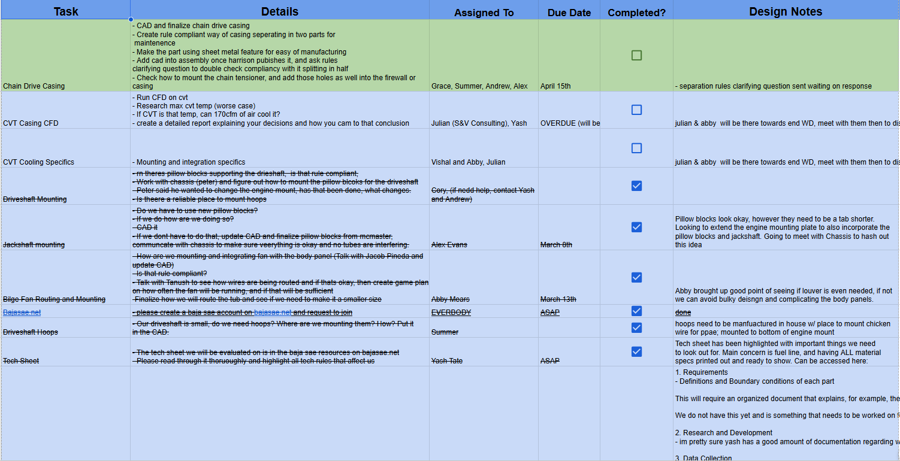
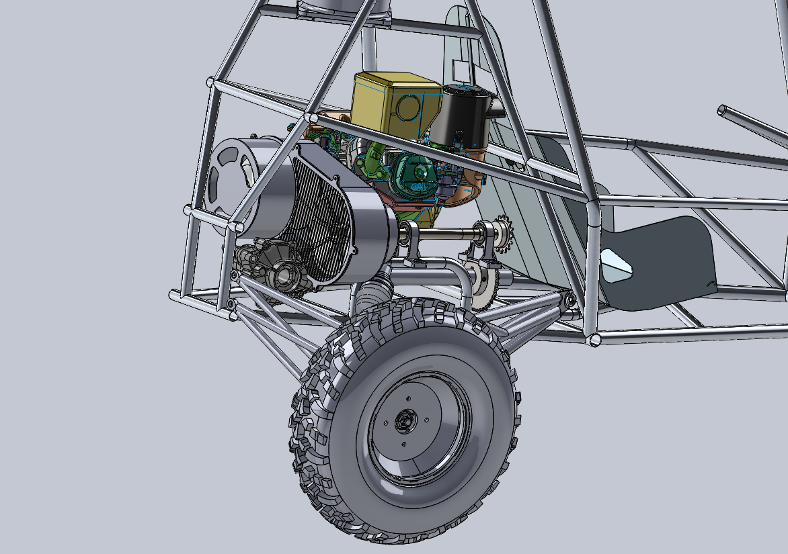
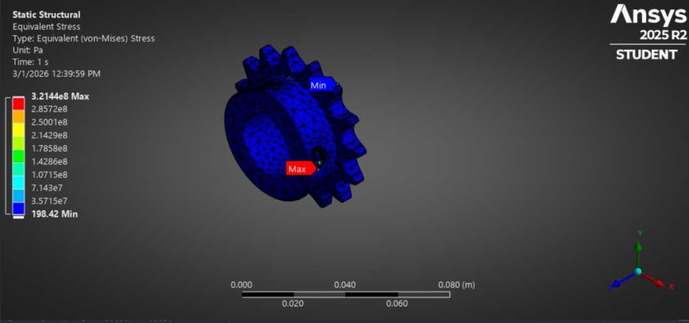

Longhorn Baja Racing · UT Austin
Baja SAE Powertrain
I led a 12-person group through the design, build and validation of a powertrain for a first-year Baja SAE team.
- 12engineers on the powertrain group
- ~8 lbremoved from the vehicle
- 4+failure modes addressed in testing
My role
As co-founder, captain and lead powertrain engineer, I set technical direction and assigned subsystem ownership. I coordinated design, machining, fabrication and assembly for the 2026 competition vehicle.


Design
We packaged a continuously variable transmission (CVT), jackshaft and chain drive in a tight chassis envelope. I used SolidWorks to manage packaging and tolerance stack-up, ran trade studies on ratios, chains and shafts, and designed guards around the CVT and chain drive.
Design decisions had to satisfy SAE rules and fit the team’s machining, welding and fabrication capabilities. I wrote assembly procedures so the team could build and service the system consistently.



Validation
I led a CFD study of airflow through the CVT housing under sustained load. The results identified airflow limitations and guided changes to the housing. The team also used DFMEA to prioritize drivetrain failure modes and ran confirmation tests on countermeasures.



Results
Powertrain trade studies removed roughly 8 lb from the vehicle. The team passed technical inspection and completed three endurance laps, marking UT Austin’s return to Baja SAE competition after more than 30 years.